Week 2 · Day 7 — why your nose can tell mirror images apart
Organic Chemistry 1
About this lecture
Spearmint and caraway (the seeds in rye bread) owe their smell to the same molecule, carvone. Same formula, same bonds, same boiling point. The only difference is that one is the mirror image of the other, and the smell receptors in your nose can tell.
Fischer projections and the moves you may make with them
Two centres, meso compounds and E/Z alkenes
Mixtures: enantiomeric excess, and what R/S does not tell you
Yesterday, anti and gauche butane turned into each other by rotation. Today’s isomers don’t.
Four ways two molecules can be related
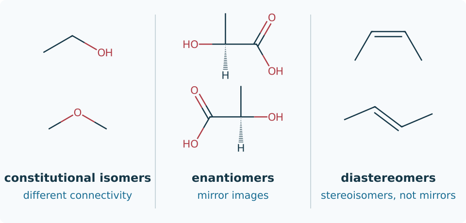
Constitutional isomers, enantiomers and diastereomers
Ask in order: same connectivity? If no, constitutional isomers. If yes, same by bond rotation? Then conformers (Day 6). If not, they’re stereoisomers: mirror images are enantiomers; the rest are diastereomers.
A stereocentre has four different groups
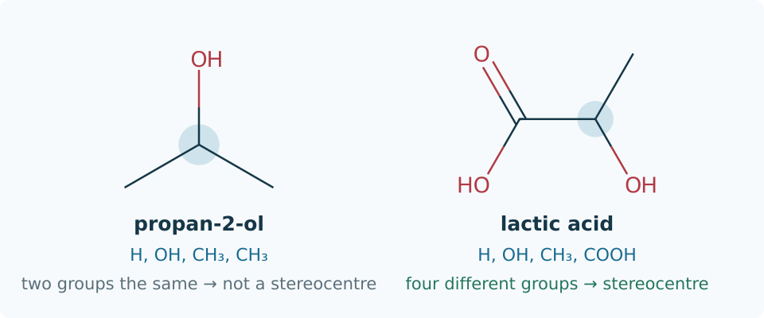
Propan-2-ol and lactic acid
A tetrahedral carbon with four different groups is a stereocentre: its mirror image can’t be laid on top of it. Two identical groups, and the mirror image is the same molecule.
Try it: someone draws a wedge on one of the H atoms of a CH₂ group. Is that carbon now a stereocentre?
No. A wedge shows direction; it can’t make two H atoms different.
Spotting stereocentres in real molecules
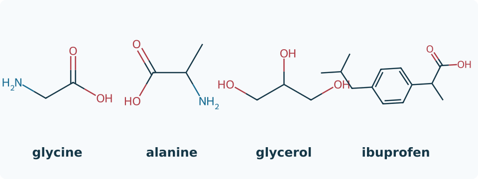
Glycine, alanine, glycerol and ibuprofen
Check each sp³ carbon: does it carry four different groups? CH₂ and CH₃ carbons never do.
Try it: which of these four molecules have a stereocentre?
Alanine and ibuprofen, one each. Glycine’s carbon has two H; glycerol’s middle carbon carries two identical CH₂OH groups.
Enantiomers are mirror images
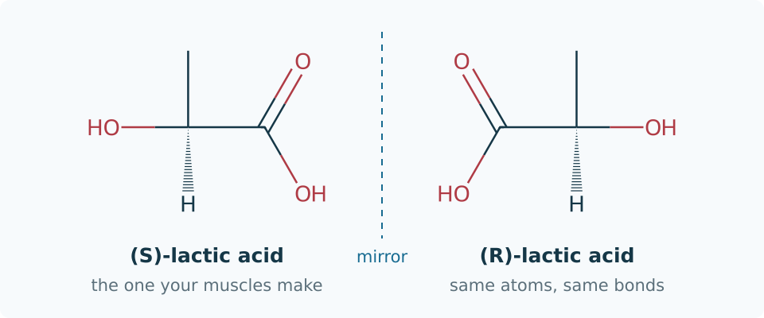
(S)- and (R)-lactic acid
Wedge = toward you, hash = away. Enantiomers have identical boiling points, solubilities and spectra. They differ only in a chiral setting: polarised light, an enzyme, a receptor.
Naming a stereocentre: rank by atomic number
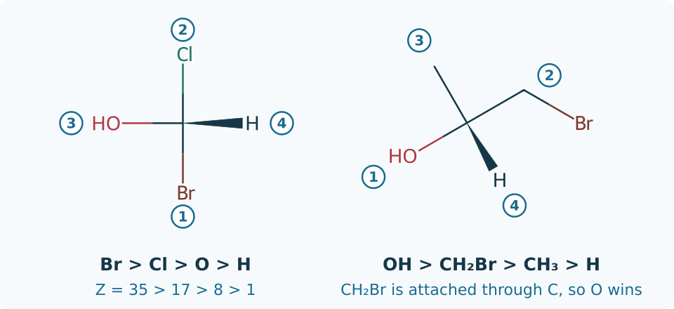
Priorities by atomic number
Cahn–Ingold–Prelog (CIP) rule 1: rank the four groups by the atomic number of the atom attached to the stereocentre. Higher Z, higher priority. Size of the whole group doesn’t matter.
Breaking a tie: go out one atom
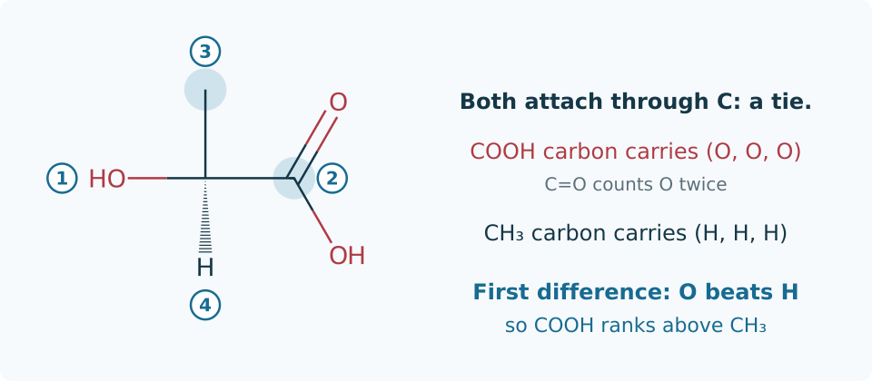
Lactic acid priorities
When two groups attach through the same atom, list what that atom carries and compare at the first difference. A double bond counts twice: C=O gives (O, O).
Try it: which ranks higher, –CH₂OH or –CH(CH₃)₂?
–CH₂OH. Its carbon carries (O, H, H); the other carries (C, C, H). Compare the highest first: O beats C.
R or S: look with priority 4 away from you
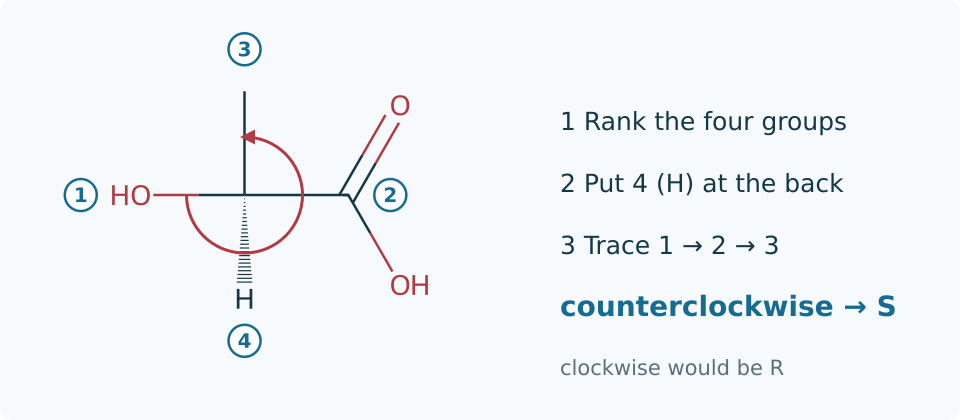
Assigning (S)-lactic acid
With the lowest group pointing away, trace 1 → 2 → 3. Clockwise = R (rectus), counterclockwise = S (sinister). This lactic acid is S.
When H points toward you, reverse it
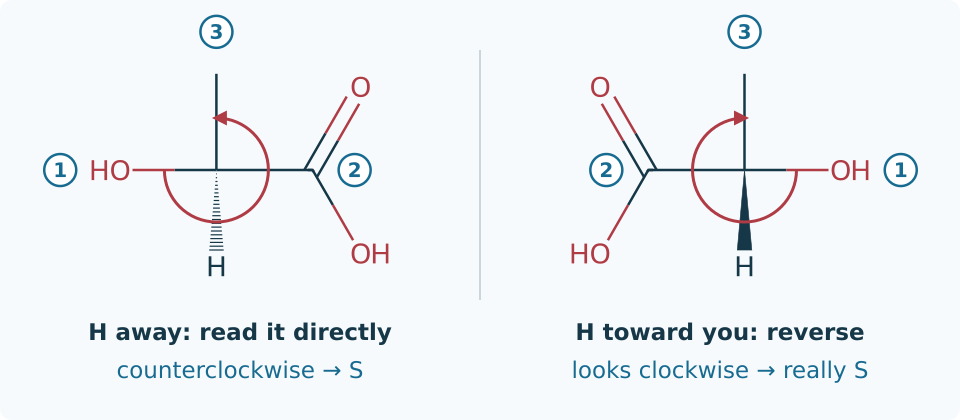
The same molecule drawn twice
If priority 4 is on a wedge, trace 1 → 2 → 3 anyway and reverse the answer. Both drawings show the same (S)-lactic acid.
Fischer projections: a cross with depth
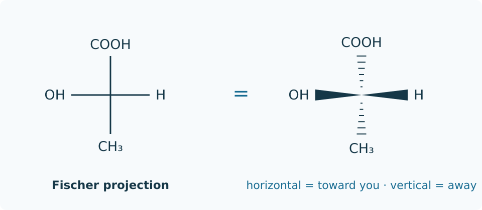
Fischer projection and wedge drawing
A Fischer projection is shorthand for one specific 3D shape: horizontal bonds come toward you, vertical bonds go away. The centre of the cross is the stereocentre carbon.
Reading R/S straight off a Fischer projection
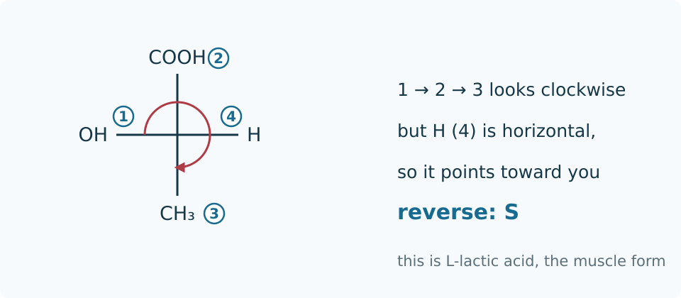
Assigning R/S on a Fischer projection
If H is on a horizontal bond, it points toward you: trace and reverse. If H is vertical, read the trace directly.
Try it: swap OH and H in this projection. Which configuration do you get?
R. One swap of two groups inverts a stereocentre. That’s D-lactic acid, the enantiomer.
What you may do to a Fischer projection
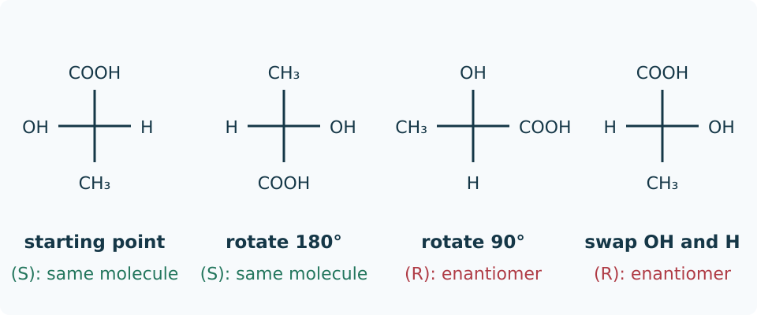
Rotating and swapping in a Fischer projection
move
result
rotate 180° in the page
same molecule
rotate 90°
enantiomer (toward/away swap)
swap two groups
enantiomer
Two stereocentres: up to four stereoisomers
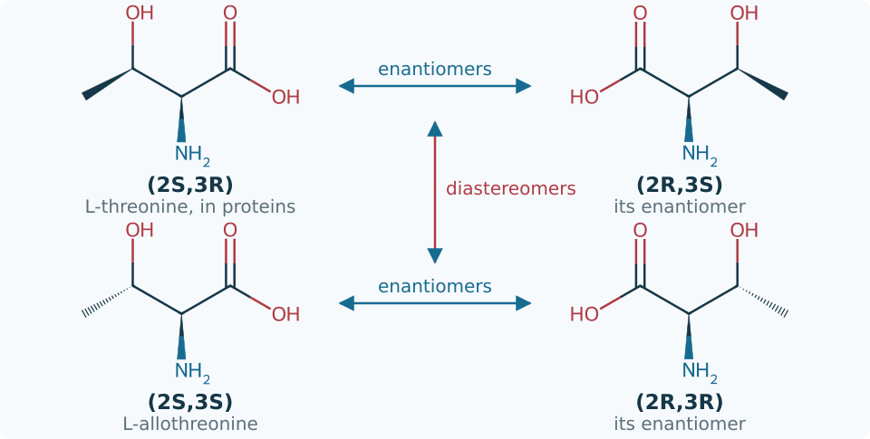
The four stereoisomers of threonine
With n stereocentres there are at most 2ⁿ stereoisomers. An enantiomer inverts every centre; change only some and you get a diastereomer.
Try it: how are (2R,3R)- and (2R,3S)-2-bromo-3-chlorobutane related?
Diastereomers. Only one centre changed, so they aren’t mirror images. (2S,3S) would be the enantiomer of (2R,3R).
Meso: stereocentres but no chirality
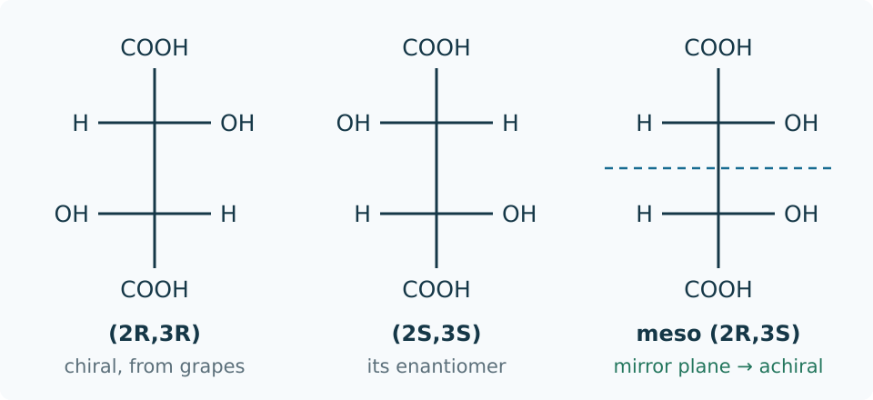
Tartaric acid stereoisomers
If the two halves are built the same, (R,S) can be its own mirror image. That’s a meso compound: achiral, so tartaric acid has only three stereoisomers, not four.
Try it: is (2R,3S)-2-bromo-3-chlorobutane meso?
No. The ends differ (Br vs Cl), so no internal mirror plane exists. It’s chiral.
E and Z: stereoisomers at a double bond
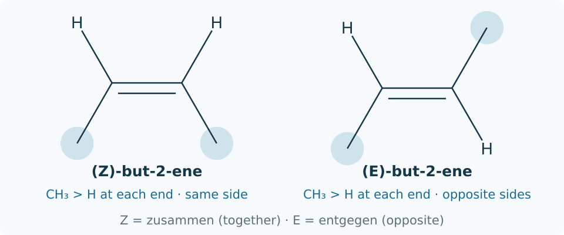
(Z)- and (E)-but-2-ene
A C=C can’t rotate, so the groups are fixed. Rank the two groups at each end separately with CIP rules. Higher priorities on the same side = Z, opposite = E.
Does this alkene have E and Z forms?
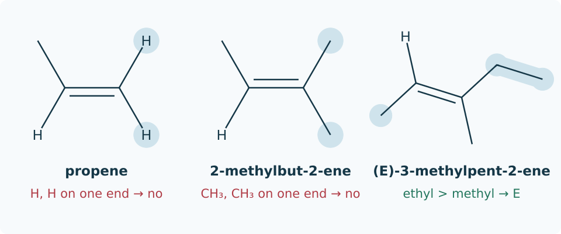
Testing alkenes for E/Z
Each alkene carbon needs two different groups. One identical pair at either end, and E/Z doesn’t apply.
Try it: can pent-2-ene, CH₃CH=CHCH₂CH₃, exist as E and Z forms?
Yes. Each alkene carbon carries one H and one carbon group, so both ends pass the test.
R/S is not the sign of rotation
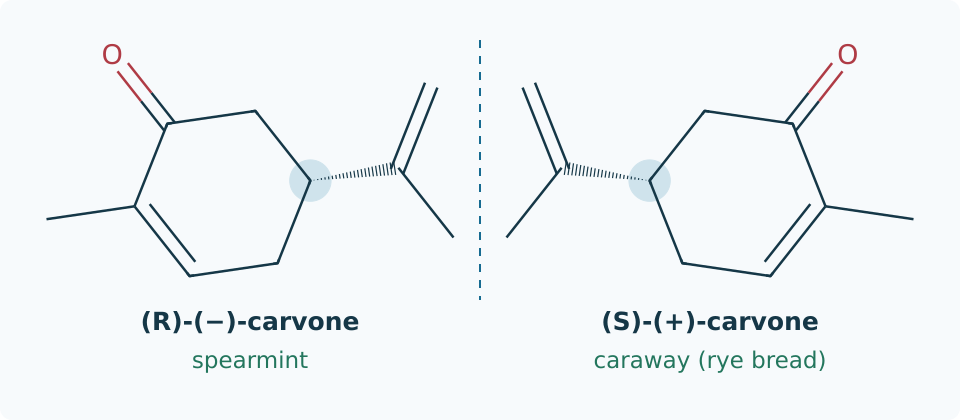
(R)- and (S)-carvone
Enantiomers rotate plane-polarised light by equal and opposite angles: (+) or (−). That sign is measured, while R/S is assigned from a drawing. No rule connects them: (R)-carvone is (−).
Try it: (R)-carvone rotates light to the left, (−). What does (S)-carvone do?
Rotates it to the right, (+), by the same angle. That’s an experimental fact about this pair, not something R or S predicts.
Chiral environments tell enantiomers apart
property
enantiomers
diastereomers
boiling point, solubility, IR
identical
different
optical rotation
equal and opposite
unrelated
reaction with an enzyme or receptor
often different
different
separated by distillation?
no
yes
A receptor is a chiral “glove”: only one hand fits well. Which enantiomer works better must be measured; R/S can’t predict it.